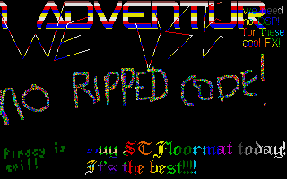

In Maggie 23's News section, they said...
[ ST FORMAT-IC FOR THE PEOPLE ] [Wow, where do they get those wacky titles?]
The Senior Dads have released a new demo called "ST Floormat". As the title suggests it is heavily based around Future Publishing's deceased magazine, and as usual it is a colostomy bag full of laughs. Full review in the next issue.
...
| TURN ONS
WHATS BEEN ON THE MAGGIE TEAMS FALCONS THIS MONTH |
Sonolumineszenz..............Avena Running......................RDT God-Boy......................Reservoir Gods 4ktro........................TSCC IT!..........................Shadows Sili-Con-Carne...............Escape Six Sievert..................TSCC Willie's Adventures..........New Beat Development ST Floormat Demo.............Senior Dads F6 Demo......................Cream |
However, they managed to review it in the same issue! Nice review but it would have helped if you read the text file as you're talking a load of rubbish about the demo! We'll detail all the mistookies that Maggie made at the end ...
And finally, you can't keep the Senior Dads down for long (nor would you care to try!) The ST Floormat demo is their 'tribute' to the sadly deceased ST Format magazine, a publication famed for being informative and 'On topic', especially with legendary editors Paula Richards and Trenton Webb at the helm.. Anyway, this demo was allegedly inspired by an article produced during the tenure of Trenton Webb, titled "Demo Coders. are they crap or wot?" The Dads decided to draw upon their deep and intimate knowledge of coding, as given to them by the ST Format coding gurus, and this demo is the end result..
Well, not quite the end, as they held onto it for quite some time, to make sure that STF was really dead, before they could risk releasing it, and avoiding packs of litigation crazed zombie lawers making low moaning noises and gently tap-tapping on the windows of the Senior Dads World GHQ..
As we said earlier, all their coding knowledge, given to them by the wise wordsmiths of STF is shown in here.. The stunning rasters, the ultra-smooth top border scroll, and even ST Format's patented top and bottom border removal technique, which involves nothing more than switching the monitor from 50 to 60 hertz! Now why didn't Tex, Level 16 and company, think of that!? Oh yes, the soundchip music takes you right back to those classic days as well..
If you can avoid a migraine, the scrolltext is well worth a look too..
Rating - 95% - Well, what are you waiting for!!